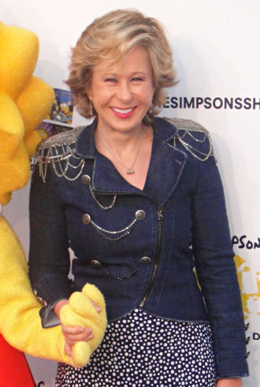

Lisa Marie Simpson
Lisa Marie Simpson is the elder daughter and middle child of the Simpson family and one of the two tritagonists (along with Marge,) of The Simpsons. She was named after a train called Lil' Lisa on her parents' 1st anniversary. In "Homer and Lisa Exchange Cross Words", she called herself Lisa Bouvier after estranging herself from her father after he bet against her in a crossword tournament.
